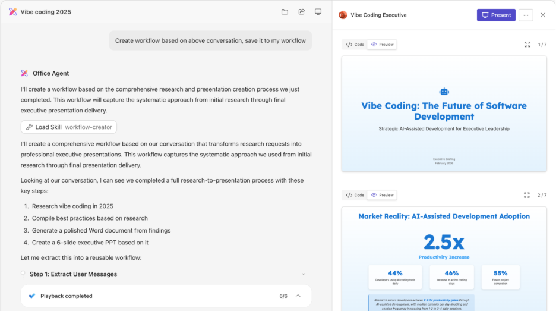

团队共同构建的通用 Agent 产品
产品定位、整体方向、Agent Runtime、技能（Skills）和工作流（Workflows）均为团队背景，不代表由个人独立完成。
Societas 是面向知识工作的通用 Agent（智能任务执行程序）系统。它会记录任务计划和执行状态，调用工具，在隔离环境中处理文件，并在失败后重试或恢复，最终交付可检查、可继续使用的结果。

workflow-creator skill 自动把这次成功对话抽取成可复用的 workflow/skill。右侧：生成的演示级 PPT 成果物。这张图一眼展示了 Societas 的三个核心：对话式交互 + 能力沉淀 + 高质量产出。只返回几段文字不足以完成真实工作。系统需要交付可继续编辑和使用的文档、演示、数据分析或网页；执行过程中还要处理文件、调用工具、记录失败，并支持重试和恢复。
结果保存为可继续修改和使用的工作文件，不只显示在聊天窗口中。
代码、浏览器和文件处理与主服务隔离，执行结果统一写回任务状态。
把领域知识和操作标准保存为技能，把成功任务的稳定步骤保存为工作流，供后续同类任务使用。
团队把这次范围扩展概括为 Artifact Creation → Outcome Completion（从生成产物到完成结果）。系统新增的责任包括：明确目标和约束、跨系统获取数据、生成结果、校验并交付。
关键变化：系统不再只接收提示并返回内容，而是记录任务目标和状态，按步骤调用工具、检查结果，并交付可继续使用的文件。
团队把这套方法称为 Taste-Driven Development（以质量判断驱动的开发，简称 TDD；此处不是测试驱动开发）。做法是把品牌、版式、叙事和领域要求写成输入条件与检查标准，让系统能够按标准修改结果。
把品牌色、受众、主题、内容目的和交付格式作为输入，用于决定字体、配色、布局和信息密度。
工作流检查内容和视觉效果；发现信息失衡、事实错误或不符合品牌要求时，修改后再交付。
技能（Skills）记录领域知识、操作步骤和质量标准；执行相关任务时才加载所需内容。
知识 → 可执行步骤工作流（Workflows）记录成功任务中的稳定步骤和决策点，供后续相似任务参考和执行。
成功任务 → 可复用流程系统读取当前页面状态，并在用户已登录的上下文中执行点击、输入和多步导航。
任务意图 → 页面操作Agent Runtime 负责保存任务目标和状态。主 Agent 分解任务并汇总结果，专用 Agent 处理代码、检索等工作；所有工具使用统一接口，代码和文件在隔离环境中处理，任务状态写入持久化存储，以便断线或重启后恢复。
主 Agent 负责分解任务、调度子 Agent、汇总结果和整理任务记忆。
不同 Agent 通过同一套接口调用工具，调用结果写入统一的事件和任务状态。
沙箱与主服务隔离，输入文件和输出产物通过受控接口同步。
旧方式要求模型生成特定格式的文本，再由 Agent Runtime 解析。结构化工具调用（Native Tool Call）改用模型 SDK（软件开发工具包）提供的标准字段传递工具名称、参数和结果。改造同时覆盖主 Agent、子 Agent、流式消息、结果回填和运行指标，不只是替换文本解析器。
主 Agent 和子 Agent 使用同一套调用方式，同时保留旧方式作为回退。
不同模型 SDK 对工具调用消息、流式事件和结果回填的格式并不一致。
模板和 Agent Runtime 可按配置选择结构化调用（Native）或旧文本方式（legacy），主 Agent 与子 Agent 使用相同接口。
运行指标记录所用模式，并按成功率和失败类型决定切换进度，避免一次性替换。
瞬时发布/订阅（pub/sub）通知延迟低，但客户端离线或服务重启时消息可能丢失。改造后，消息内容先写入持久化存储，通知只用于提示有新内容；客户端按游标读取新增消息，重连后可从上次位置继续。
同一任务的消息片段使用稳定顺序；消息按会话隔离，客户端重连时从已记录游标继续读取。
统一传输接口允许新旧实现并行、逐步切换和回退，业务层不需要随迁移重写。
敏感内容需要持久化才能支持长任务，但不能全部依赖同一个静态密钥。方案分开管理根密钥、用户级数据密钥和密文格式，并允许旧数据逐步迁移。
读取时兼容旧数据，写入时逐步统一为新密文格式。
根密钥用于保护用户级数据密钥；密文元数据记录密钥版本，以便选择正确版本解密和执行密钥轮换。
字符串和 JSON（结构化文本格式）使用统一的密文封装格式；应用程序接口（API）层根据用户上下文调用加解密，业务代码不直接接触密钥。
系统自动识别明文和密文：先兼容读取旧数据，再分批回填，避免一次性迁移全部数据。
其他产品调用 Agent 时，长任务不能依赖一次同步请求完成。接口改为：创建持久化任务、订阅或轮询状态、获取最终结果；代表用户访问下游资源时，继续传递并校验用户身份和权限。
请求先写入任务存储，不只保存在当前服务进程的内存中。
系统代表用户访问下游资源时，继续遵守用户身份和权限边界。
服务重启后可找回运行中的任务，并继续返回任务状态。
调用方通过固定接口获取任务进度、错误信息和最终产物。
个人负责 · 异步任务接口 / 服务边界